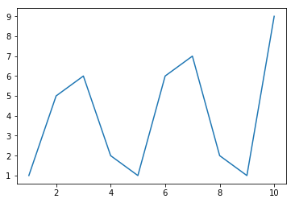
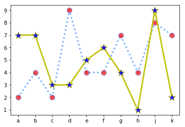
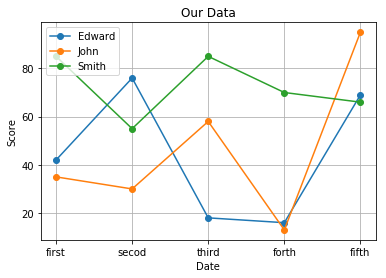
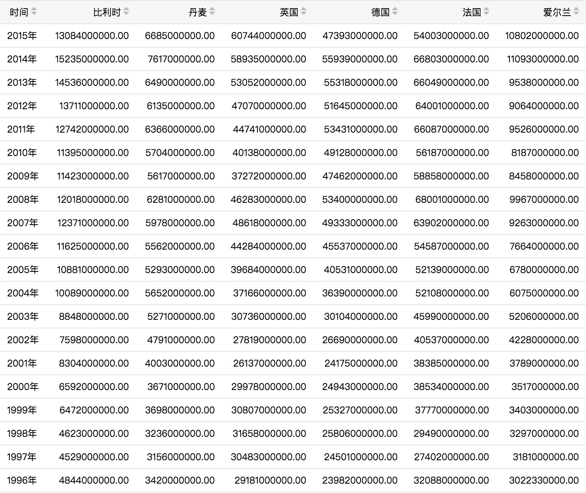
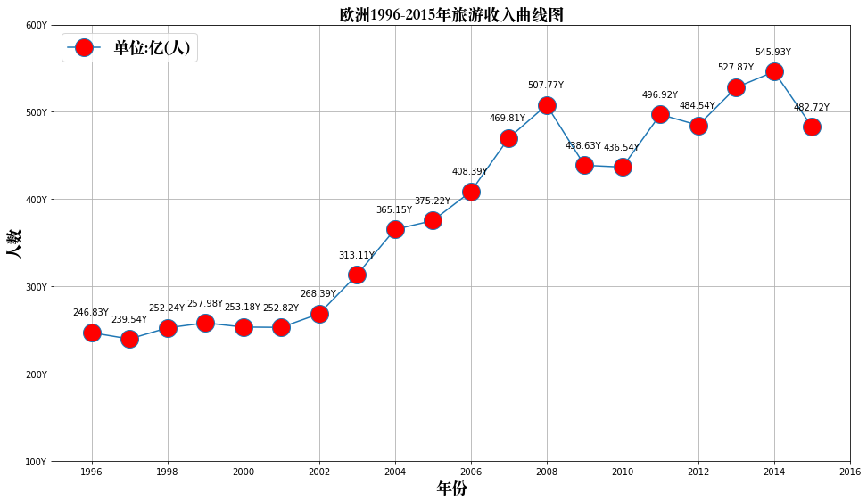
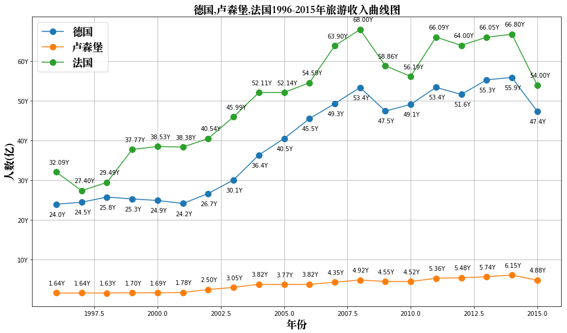

<!DOCTYPE HTML>
<html lang="en" >
    
    <head>
        
        <meta charset="UTF-8">
        <meta http-equiv="X-UA-Compatible" content="IE=edge" />
        <title>线性图和案例 | Linkedln：2016年中国互联网最热职位人才库报告</title>
        <meta content="text/html; charset=utf-8" http-equiv="Content-Type">
        <meta name="description" content="">
        <meta name="generator" content="GitBook 2.6.7">
        
        
        <meta name="HandheldFriendly" content="true"/>
        <meta name="viewport" content="width=device-width, initial-scale=1, user-scalable=no">
        <meta name="apple-mobile-web-app-capable" content="yes">
        <meta name="apple-mobile-web-app-status-bar-style" content="black">
        <link rel="apple-touch-icon-precomposed" sizes="152x152" href="../gitbook/images/apple-touch-icon-precomposed-152.png">
        <link rel="shortcut icon" href="../gitbook/images/favicon.ico" type="image/x-icon">
        
    <link rel="stylesheet" href="../gitbook/style.css">
    
        
        <link rel="stylesheet" href="../gitbook/plugins/gitbook-plugin-highlight/website.css">
        
    
        
        <link rel="stylesheet" href="../gitbook/plugins/gitbook-plugin-search/search.css">
        
    
        
        <link rel="stylesheet" href="../gitbook/plugins/gitbook-plugin-fontsettings/website.css">
        
    
    

        
    
    
    <link rel="next" href="../part04/4.1.2_条状图和案例.html" />
    
    
    <link rel="prev" href="../part04/4.1_图表绘制.html" />
    

        
    </head>
    <body>
        
        
    <div class="book"
        data-level="4.1.1"
        data-chapter-title="线性图和案例"
        data-filepath="part04/4.1.1_线性图和案例.md"
        data-basepath=".."
        data-revision="Thu Dec 14 2017 23:24:20 GMT+0800 (CST)"
        data-innerlanguage="">
    

<div class="book-summary">
    <nav role="navigation">
        <ul class="summary">
            
            
            
            

            

            
    
        <li class="chapter " data-level="0" data-path="index.html">
            
                
                    <a href="../index.html">
                
                        <i class="fa fa-check"></i>
                        
                        数据分析
                    </a>
            
            
        </li>
    
        <li class="chapter " data-level="1" data-path="part01/1_数据分析概述.html">
            
                
                    <a href="../part01/1_数据分析概述.html">
                
                        <i class="fa fa-check"></i>
                        
                            <b>1.</b>
                        
                        数据分析概述
                    </a>
            
            
            <ul class="articles">
                
    
        <li class="chapter " data-level="1.1" data-path="part01/1.1_Python数据分析.html">
            
                
                    <a href="../part01/1.1_Python数据分析.html">
                
                        <i class="fa fa-check"></i>
                        
                            <b>1.1.</b>
                        
                        Python数据分析
                    </a>
            
            
        </li>
    
        <li class="chapter " data-level="1.2" data-path="part01/1.2_jupyper_notebook.html">
            
                
                    <a href="../part01/1.2_jupyper_notebook.html">
                
                        <i class="fa fa-check"></i>
                        
                            <b>1.2.</b>
                        
                        jupyter notebook
                    </a>
            
            
        </li>
    

            </ul>
            
        </li>
    
        <li class="chapter " data-level="2" data-path="part02/2_Numpy.html">
            
                
                    <a href="../part02/2_Numpy.html">
                
                        <i class="fa fa-check"></i>
                        
                            <b>2.</b>
                        
                        Numpy
                    </a>
            
            
            <ul class="articles">
                
    
        <li class="chapter " data-level="2.1" data-path="part02/2.1_创建数组.html">
            
                
                    <a href="../part02/2.1_创建数组.html">
                
                        <i class="fa fa-check"></i>
                        
                            <b>2.1.</b>
                        
                        创建数组
                    </a>
            
            
        </li>
    
        <li class="chapter " data-level="2.2" data-path="part02/2.2_数据类型.html">
            
                
                    <a href="../part02/2.2_数据类型.html">
                
                        <i class="fa fa-check"></i>
                        
                            <b>2.2.</b>
                        
                        数据类型
                    </a>
            
            
        </li>
    
        <li class="chapter " data-level="2.3" data-path="part02/2.3_数组运算.html">
            
                
                    <a href="../part02/2.3_数组运算.html">
                
                        <i class="fa fa-check"></i>
                        
                            <b>2.3.</b>
                        
                        数组运算
                    </a>
            
            
        </li>
    
        <li class="chapter " data-level="2.4" data-path="part02/2.4_数组索引和切片.html">
            
                
                    <a href="../part02/2.4_数组索引和切片.html">
                
                        <i class="fa fa-check"></i>
                        
                            <b>2.4.</b>
                        
                        数组索引和切片
                    </a>
            
            
        </li>
    
        <li class="chapter " data-level="2.5" data-path="part02/2.5_数组函数.html">
            
                
                    <a href="../part02/2.5_数组函数.html">
                
                        <i class="fa fa-check"></i>
                        
                            <b>2.5.</b>
                        
                        数组函数
                    </a>
            
            
            <ul class="articles">
                
    
        <li class="chapter " data-level="2.5.1" data-path="part02/2.5.1_通用元素级数组函数.html">
            
                
                    <a href="../part02/2.5.1_通用元素级数组函数.html">
                
                        <i class="fa fa-check"></i>
                        
                            <b>2.5.1.</b>
                        
                        通用元素级数组函数
                    </a>
            
            
        </li>
    
        <li class="chapter " data-level="2.5.2" data-path="part02/2.5.2_数组统计函数.html">
            
                
                    <a href="../part02/2.5.2_数组统计函数.html">
                
                        <i class="fa fa-check"></i>
                        
                            <b>2.5.2.</b>
                        
                        数组统计函数
                    </a>
            
            
        </li>
    
        <li class="chapter " data-level="2.5.3" data-path="part02/2.5.3_all和any函数.html">
            
                
                    <a href="../part02/2.5.3_all和any函数.html">
                
                        <i class="fa fa-check"></i>
                        
                            <b>2.5.3.</b>
                        
                        all和any函数
                    </a>
            
            
        </li>
    
        <li class="chapter " data-level="2.5.4" data-path="part02/2.5.4_添加和删除函数.html">
            
                
                    <a href="../part02/2.5.4_添加和删除函数.html">
                
                        <i class="fa fa-check"></i>
                        
                            <b>2.5.4.</b>
                        
                        添加和删除函数
                    </a>
            
            
        </li>
    
        <li class="chapter " data-level="2.5.5" data-path="part02/2.5.5_唯一化和集合函数.html">
            
                
                    <a href="../part02/2.5.5_唯一化和集合函数.html">
                
                        <i class="fa fa-check"></i>
                        
                            <b>2.5.5.</b>
                        
                        唯一化和集合函数
                    </a>
            
            
        </li>
    
        <li class="chapter " data-level="2.5.6" data-path="part02/2.5.6_随机数生成函数.html">
            
                
                    <a href="../part02/2.5.6_随机数生成函数.html">
                
                        <i class="fa fa-check"></i>
                        
                            <b>2.5.6.</b>
                        
                        随机数生成函数
                    </a>
            
            
        </li>
    
        <li class="chapter " data-level="2.5.7" data-path="part02/2.5.7_数组排序函数.html">
            
                
                    <a href="../part02/2.5.7_数组排序函数.html">
                
                        <i class="fa fa-check"></i>
                        
                            <b>2.5.7.</b>
                        
                        数组排序函数
                    </a>
            
            
        </li>
    

            </ul>
            
        </li>
    
        <li class="chapter " data-level="2.6" data-path="part02/2.6_数组文件输入输出.html">
            
                
                    <a href="../part02/2.6_数组文件输入输出.html">
                
                        <i class="fa fa-check"></i>
                        
                            <b>2.6.</b>
                        
                        数组文件输入输出
                    </a>
            
            
            <ul class="articles">
                
    
        <li class="chapter " data-level="2.6.1" data-path="part02/2.6.1_数组输入和输出.html">
            
                
                    <a href="../part02/2.6.1_数组输入和输出.html">
                
                        <i class="fa fa-check"></i>
                        
                            <b>2.6.1.</b>
                        
                        数组输入和输出
                    </a>
            
            
        </li>
    
        <li class="chapter " data-level="2.6.2" data-path="part02/2.6.2_读写文本文件.html">
            
                
                    <a href="../part02/2.6.2_读写文本文件.html">
                
                        <i class="fa fa-check"></i>
                        
                            <b>2.6.2.</b>
                        
                        读写文本文件
                    </a>
            
            
        </li>
    

            </ul>
            
        </li>
    
        <li class="chapter " data-level="2.7" data-path="part02/2.7_案例_亚洲国家人口数据计算.html">
            
                
                    <a href="../part02/2.7_案例_亚洲国家人口数据计算.html">
                
                        <i class="fa fa-check"></i>
                        
                            <b>2.7.</b>
                        
                        案例_亚洲国家人口数据
                    </a>
            
            
        </li>
    

            </ul>
            
        </li>
    
        <li class="chapter " data-level="3" data-path="part03/3_Pandas.html">
            
                
                    <a href="../part03/3_Pandas.html">
                
                        <i class="fa fa-check"></i>
                        
                            <b>3.</b>
                        
                        Pandas
                    </a>
            
            
            <ul class="articles">
                
    
        <li class="chapter " data-level="3.1" data-path="part03/3.1_Series.html">
            
                
                    <a href="../part03/3.1_Series.html">
                
                        <i class="fa fa-check"></i>
                        
                            <b>3.1.</b>
                        
                        Series
                    </a>
            
            
            <ul class="articles">
                
    
        <li class="chapter " data-level="3.1.1" data-path="part03/3.1.1_Series创建.html">
            
                
                    <a href="../part03/3.1.1_Series创建.html">
                
                        <i class="fa fa-check"></i>
                        
                            <b>3.1.1.</b>
                        
                        Series创建
                    </a>
            
            
        </li>
    
        <li class="chapter " data-level="3.1.2" data-path="part03/3.1.2_Series操作.html">
            
                
                    <a href="../part03/3.1.2_Series操作.html">
                
                        <i class="fa fa-check"></i>
                        
                            <b>3.1.2.</b>
                        
                        Series操作
                    </a>
            
            
        </li>
    
        <li class="chapter " data-level="3.1.3" data-path="part03/3.1.3_了解NaN.html">
            
                
                    <a href="../part03/3.1.3_了解NaN.html">
                
                        <i class="fa fa-check"></i>
                        
                            <b>3.1.3.</b>
                        
                        了解NaN
                    </a>
            
            
        </li>
    

            </ul>
            
        </li>
    
        <li class="chapter " data-level="3.2" data-path="part03/3.2_DataFrame.html">
            
                
                    <a href="../part03/3.2_DataFrame.html">
                
                        <i class="fa fa-check"></i>
                        
                            <b>3.2.</b>
                        
                        DataFrame
                    </a>
            
            
            <ul class="articles">
                
    
        <li class="chapter " data-level="3.2.1" data-path="part03/3.2.1_DataFrame创建.html">
            
                
                    <a href="../part03/3.2.1_DataFrame创建.html">
                
                        <i class="fa fa-check"></i>
                        
                            <b>3.2.1.</b>
                        
                        创建对象
                    </a>
            
            
        </li>
    
        <li class="chapter " data-level="3.2.2" data-path="part03/3.2.2_DataFrame操作.html">
            
                
                    <a href="../part03/3.2.2_DataFrame操作.html">
                
                        <i class="fa fa-check"></i>
                        
                            <b>3.2.2.</b>
                        
                        数据操作
                    </a>
            
            
        </li>
    
        <li class="chapter " data-level="3.2.3" data-path="part03/3.2.3_算数运算和数据对齐.html">
            
                
                    <a href="../part03/3.2.3_算数运算和数据对齐.html">
                
                        <i class="fa fa-check"></i>
                        
                            <b>3.2.3.</b>
                        
                        算数运算和数据对齐
                    </a>
            
            
        </li>
    
        <li class="chapter " data-level="3.2.4" data-path="part03/3.2.4_函数应用-apply函数.html">
            
                
                    <a href="../part03/3.2.4_函数应用-apply函数.html">
                
                        <i class="fa fa-check"></i>
                        
                            <b>3.2.4.</b>
                        
                        函数应用和映射了解NaN
                    </a>
            
            
        </li>
    
        <li class="chapter " data-level="3.2.5" data-path="part03/3.2.5_Pandas排序.html">
            
                
                    <a href="../part03/3.2.5_Pandas排序.html">
                
                        <i class="fa fa-check"></i>
                        
                            <b>3.2.5.</b>
                        
                        Pandas排序
                    </a>
            
            
        </li>
    
        <li class="chapter " data-level="3.2.6" data-path="part03/3.2.6_等级索引和分级.html">
            
                
                    <a href="../part03/3.2.6_等级索引和分级.html">
                
                        <i class="fa fa-check"></i>
                        
                            <b>3.2.6.</b>
                        
                        等级索引和分级
                    </a>
            
            
        </li>
    
        <li class="chapter " data-level="3.2.7" data-path="part03/3.2.7_处理缺失数据.html">
            
                
                    <a href="../part03/3.2.7_处理缺失数据.html">
                
                        <i class="fa fa-check"></i>
                        
                            <b>3.2.7.</b>
                        
                        处理缺失数据
                    </a>
            
            
        </li>
    

            </ul>
            
        </li>
    
        <li class="chapter " data-level="3.3" data-path="part03/3.3_数据准备.html">
            
                
                    <a href="../part03/3.3_数据准备.html">
                
                        <i class="fa fa-check"></i>
                        
                            <b>3.3.</b>
                        
                        数据准备
                    </a>
            
            
            <ul class="articles">
                
    
        <li class="chapter " data-level="3.3.1" data-path="part03/3.3.1_数据组装.html">
            
                
                    <a href="../part03/3.3.1_数据组装.html">
                
                        <i class="fa fa-check"></i>
                        
                            <b>3.3.1.</b>
                        
                        数据组装
                    </a>
            
            
        </li>
    
        <li class="chapter " data-level="3.3.2" data-path="part03/3.3.2_轴向旋转.html">
            
                
                    <a href="../part03/3.3.2_轴向旋转.html">
                
                        <i class="fa fa-check"></i>
                        
                            <b>3.3.2.</b>
                        
                        轴向旋转
                    </a>
            
            
        </li>
    

            </ul>
            
        </li>
    
        <li class="chapter " data-level="3.4" data-path="part03/3.4_数据转换.html">
            
                
                    <a href="../part03/3.4_数据转换.html">
                
                        <i class="fa fa-check"></i>
                        
                            <b>3.4.</b>
                        
                        数据转换
                    </a>
            
            
            <ul class="articles">
                
    
        <li class="chapter " data-level="3.4.1" data-path="part03/3.4.1_删除重复行.html">
            
                
                    <a href="../part03/3.4.1_删除重复行.html">
                
                        <i class="fa fa-check"></i>
                        
                            <b>3.4.1.</b>
                        
                        删除重复行列
                    </a>
            
            
        </li>
    
        <li class="chapter " data-level="3.4.2" data-path="part03/3.4.2_映射.html">
            
                
                    <a href="../part03/3.4.2_映射.html">
                
                        <i class="fa fa-check"></i>
                        
                            <b>3.4.2.</b>
                        
                        映射
                    </a>
            
            
        </li>
    
        <li class="chapter " data-level="3.4.3" data-path="part03/3.4.3_排序-take函数.html">
            
                
                    <a href="../part03/3.4.3_排序-take函数.html">
                
                        <i class="fa fa-check"></i>
                        
                            <b>3.4.3.</b>
                        
                        排序
                    </a>
            
            
        </li>
    

            </ul>
            
        </li>
    
        <li class="chapter " data-level="3.5" data-path="part03/3.5_数据聚合.html">
            
                
                    <a href="../part03/3.5_数据聚合.html">
                
                        <i class="fa fa-check"></i>
                        
                            <b>3.5.</b>
                        
                        数据聚合
                    </a>
            
            
            <ul class="articles">
                
    
        <li class="chapter " data-level="3.5.1" data-path="part03/3.5.1_分组-GroupBy.html">
            
                
                    <a href="../part03/3.5.1_分组-GroupBy.html">
                
                        <i class="fa fa-check"></i>
                        
                            <b>3.5.1.</b>
                        
                        分组(GroupBy)
                    </a>
            
            
        </li>
    
        <li class="chapter " data-level="3.5.2" data-path="part03/3.5.2_聚合-Aggregation.html">
            
                
                    <a href="../part03/3.5.2_聚合-Aggregation.html">
                
                        <i class="fa fa-check"></i>
                        
                            <b>3.5.2.</b>
                        
                        聚合(Aggregation)
                    </a>
            
            
        </li>
    

            </ul>
            
        </li>
    
        <li class="chapter " data-level="3.6" data-path="part03/3.6_数据读写.html">
            
                
                    <a href="../part03/3.6_数据读写.html">
                
                        <i class="fa fa-check"></i>
                        
                            <b>3.6.</b>
                        
                        数据读写
                    </a>
            
            
            <ul class="articles">
                
    
        <li class="chapter " data-level="3.6.1" data-path="part03/3.6.1_读写CSV文本数据.html">
            
                
                    <a href="../part03/3.6.1_读写CSV文本数据.html">
                
                        <i class="fa fa-check"></i>
                        
                            <b>3.6.1.</b>
                        
                        读写CSV文本数据
                    </a>
            
            
        </li>
    
        <li class="chapter " data-level="3.6.2" data-path="part03/3.6.2_读写HTML文本文件数据.html">
            
                
                    <a href="../part03/3.6.2_读写HTML文本文件数据.html">
                
                        <i class="fa fa-check"></i>
                        
                            <b>3.6.2.</b>
                        
                        读写HTML文本文件数据
                    </a>
            
            
        </li>
    
        <li class="chapter " data-level="3.6.3" data-path="part03/3.6.3_读写数据库数据.html">
            
                
                    <a href="../part03/3.6.3_读写数据库数据.html">
                
                        <i class="fa fa-check"></i>
                        
                            <b>3.6.3.</b>
                        
                        读写数据库数据
                    </a>
            
            
        </li>
    

            </ul>
            
        </li>
    

            </ul>
            
        </li>
    
        <li class="chapter " data-level="4" data-path="part04/4_Matplotlib.html">
            
                
                    <a href="../part04/4_Matplotlib.html">
                
                        <i class="fa fa-check"></i>
                        
                            <b>4.</b>
                        
                        Matplotlib
                    </a>
            
            
            <ul class="articles">
                
    
        <li class="chapter " data-level="4.1" data-path="part04/4.1_图表绘制.html">
            
                
                    <a href="../part04/4.1_图表绘制.html">
                
                        <i class="fa fa-check"></i>
                        
                            <b>4.1.</b>
                        
                        图标绘制
                    </a>
            
            
            <ul class="articles">
                
    
        <li class="chapter active" data-level="4.1.1" data-path="part04/4.1.1_线性图和案例.html">
            
                
                    <a href="../part04/4.1.1_线性图和案例.html">
                
                        <i class="fa fa-check"></i>
                        
                            <b>4.1.1.</b>
                        
                        线性图和案例
                    </a>
            
            
        </li>
    
        <li class="chapter " data-level="4.1.2" data-path="part04/4.1.2_条状图和案例.html">
            
                
                    <a href="../part04/4.1.2_条状图和案例.html">
                
                        <i class="fa fa-check"></i>
                        
                            <b>4.1.2.</b>
                        
                        条状图和案例
                    </a>
            
            
        </li>
    
        <li class="chapter " data-level="4.1.3" data-path="part04/4.1.3_饼图和案例.html">
            
                
                    <a href="../part04/4.1.3_饼图和案例.html">
                
                        <i class="fa fa-check"></i>
                        
                            <b>4.1.3.</b>
                        
                        饼图和案例
                    </a>
            
            
        </li>
    

            </ul>
            
        </li>
    
        <li class="chapter " data-level="4.2" data-path="part04/4.2_绘制多个图像.html">
            
                
                    <a href="../part04/4.2_绘制多个图像.html">
                
                        <i class="fa fa-check"></i>
                        
                            <b>4.2.</b>
                        
                        绘制多个图像
                    </a>
            
            
        </li>
    

            </ul>
            
        </li>
    


            
            <li class="divider"></li>
            <li>
                <a href="https://www.gitbook.com" target="blank" class="gitbook-link">
                    Published with GitBook
                </a>
            </li>
            
        </ul>
    </nav>
</div>

    <div class="book-body">
        <div class="body-inner">
            <div class="book-header" role="navigation">
    <!-- Actions Left -->
    

    <!-- Title -->
    <h1>
        <i class="fa fa-circle-o-notch fa-spin"></i>
        <a href="../" >Linkedln：2016年中国互联网最热职位人才库报告</a>
    </h1>
</div>

            <div class="page-wrapper" tabindex="-1" role="main">
                <div class="page-inner">
                
                
                    <section class="normal" id="section-">
                    
                        <h3 id="411-&#x7EBF;&#x6027;&#x56FE;&#x548C;&#x6848;&#x4F8B;">4.1.1 &#x7EBF;&#x6027;&#x56FE;&#x548C;&#x6848;&#x4F8B;</h3>
<hr>
<p>&#x5728;&#x56FE;&#x8868;&#x7684;&#x6240;&#x6709;&#x7C7B;&#x578B;&#x4E2D;&#xFF0C;&#x7EBF;&#x6027;&#x56FE;&#x6700;&#x4E3A;&#x7B80;&#x5355;&#x3002;&#x7EBF;&#x6027;&#x56FE;&#x7684;&#x5404;&#x4E2A;&#x6570;&#x636E;&#x70B9;&#x7531;&#x4E00;&#x6761;&#x76F4;&#x7EBF;&#x6765;&#x8FDE;&#x63A5;. &#x4E00;&#x5BF9;&#x5BF9;(x, y)&#x503C;&#x7EC4;&#x6210;&#x7684;&#x6570;&#x636E;&#x70B9;&#x5728;&#x56FE;&#x8868;&#x4E2D;&#x7684;&#x4F4D;&#x7F6E;&#x53D6;&#x51B3;&#x4E8E;&#x4E24;&#x6761;&#x8F74;(x&#x548C;y)&#x7684;&#x523B;&#x5EA6;&#x8303;&#x56F4;.</p>
<p>&#x5982;&#x679C;&#x8981;&#x7ED8;&#x5236;&#x4E00;&#x7CFB;&#x5217;&#x7684;&#x6570;&#x636E;&#x70B9;&#xFF0C;&#x9700;&#x8981;&#x521B;&#x5EFA;&#x4E24;&#x4E2A;Numpy&#x6570;&#x7EC4;. &#x9996;&#x5148;, &#x521B;&#x5EFA;&#x5305;&#x542B;x&#x503C;&#x7684;&#x6570;&#x7EC4;, &#x7528;&#x4F5C;x&#x8F74;. &#x518D;&#x521B;&#x5EFA;&#x5305;&#x542B;y&#x503C;&#x5F97;&#x6570;&#x7EC4;&#xFF0C;&#x7528;&#x4F5C;y&#x8F74;. &#x5B8C;&#x6210;&#x4E86;&#x4E24;&#x4E2A;&#x6570;&#x7EC4;&#x521B;&#x5EFA;&#xFF0C;&#x53EA;&#x9700;&#x8981;&#x8C03;&#x7528;plot()&#x51FD;&#x6570;&#x7ED8;&#x5236;&#x56FE;&#x50CF;&#x5373;&#x53EF;.</p>
<p>&#x7ED8;&#x5236;&#x7EBF;&#x6027;&#x56FE;, &#x6211;&#x4EEC;&#x7528;&#x5230;&#x51FD;&#x6570;:</p>
<blockquote>
<p> pandas.pyplot.plot()</p>
</blockquote>
<pre><code class="lang-python"><span class="hljs-keyword">from</span> pandas <span class="hljs-keyword">import</span> DataFrame,Series
<span class="hljs-keyword">import</span> pandas <span class="hljs-keyword">as</span> pd
<span class="hljs-keyword">import</span> numpy <span class="hljs-keyword">as</span> np
<span class="hljs-keyword">import</span> matplotlib.pyplot <span class="hljs-keyword">as</span> plt

x = np.arange(<span class="hljs-number">1</span>, <span class="hljs-number">11</span>)
y = np.random.randint(<span class="hljs-number">1</span>, <span class="hljs-number">10</span>, <span class="hljs-number">10</span>)

<span class="hljs-comment"># &#x8C03;&#x7528;&#x7ED8;&#x5236;&#x7EBF;&#x6027;&#x56FE;&#x51FD;&#x6570;plot()</span>
plt.plot(x, y)
<span class="hljs-comment"># &#x8C03;&#x7528;show&#x65B9;&#x6CD5;&#x663E;&#x5F0F;</span>
plt.show()
</code></pre>
<p></p>
<p><strong>&#x7EBF;&#x6761;&#x548C;&#x6807;&#x8BB0;&#x8282;&#x70B9;&#x6837;&#x5F0F;:</strong>
&#x6807;&#x8BB0;&#x5B57;&#x7B26;&#xFF1A;&#x6807;&#x8BB0;&#x7EBF;&#x6761;&#x4E2D;&#x7684;&#x70B9;.</p>
<ul>
<li>&#x7EBF;&#x6761;&#x989C;&#x8272;&#xFF0C;color=&apos;g&apos;</li>
<li>&#x7EBF;&#x6761;&#x98CE;&#x683C;&#xFF0C;linestyle=&apos;--&apos;</li>
<li>&#x7EBF;&#x6761;&#x7C97;&#x7EC6;&#xFF0C;linewidth=5.0</li>
<li>&#x6807;&#x8BB0;&#x98CE;&#x683C;&#xFF0C;marker=&apos;o&apos;</li>
<li>&#x6807;&#x8BB0;&#x989C;&#x8272;&#xFF0C;markerfacecolor=&apos;b&apos;</li>
<li>&#x6807;&#x8BB0;&#x5C3A;&#x5BF8;&#xFF0C;markersize=20</li>
<li>&#x900F;&#x660E;&#x5EA6;&#xFF0C;alpha=0.5</li>
<li>&#x7EBF;&#x6761;&#x548C;&#x6807;&#x8BB0;&#x8282;&#x70B9;&#x683C;&#x5F0F;&#x5B57;&#x7B26;
&#x5982;&#x679C;&#x4E0D;&#x8BBE;&#x7F6E;&#x989C;&#x8272;&#xFF0C;&#x7CFB;&#x7EDF;&#x9ED8;&#x8BA4;&#x4F1A;&#x53D6;&#x4E00;&#x4E2A;&#x4E0D;&#x540C;&#x989C;&#x8272;&#x6765;&#x533A;&#x522B;&#x7EBF;&#x6761;.</li>
</ul>
<table>
<thead>
<tr>
<th>&#x989C;&#x8272;&#x5B57;&#x7B26;(color)</th>
<th>&#x98CE;&#x683C;(linestyle)</th>
<th>&#x6807;&#x8BB0;&#x5B57;&#x7B26;(mark)</th>
</tr>
</thead>
<tbody>
<tr>
<td>r &#x7EA2;&#x8272;</td>
<td>- &#x5B9E;&#x7EBF;</td>
<td>o&#x5B9E;&#x5FC3;&#x5708;&#x6807;&#x8BB0;</td>
</tr>
<tr>
<td>g &#x7EFF;&#x8272;</td>
<td>-- &#x865A;&#x7EBF;,&#x7834;&#x6298;&#x7EBF;</td>
<td>. &#x70B9;&#x6807;&#x8BB0;</td>
</tr>
<tr>
<td>b &#x84DD;&#x8272;</td>
<td>-. &#x70B9;&#x5212;&#x7EBF;</td>
<td>, &#x50CF;&#x7D20;&#x6807;&#x8BB0;,&#x6781;&#x5C0F;&#x7684;&#x70B9;</td>
</tr>
<tr>
<td>w &#x767D;&#x8272;</td>
<td>: &#x70B9;&#x865A;&#x7EBF;,&#x865A;&#x7EBF;</td>
<td>v &#x5012;&#x4E09;&#x89D2;&#x6807;&#x8BB0;</td>
</tr>
<tr>
<td>c &#x9752;&#x8272;</td>
<td>&apos;&apos; &#x7559;&#x7A7A;&#x6216;&#x7A7A;&#x683C;,&#x65E0;&#x7EBF;&#x6761;</td>
<td>^ &#x4E0A;&#x4E09;&#x89D2;&#x6807;&#x8BB0;</td>
</tr>
<tr>
<td>m &#x6D0B;&#x7EA2;</td>
<td></td>
<td>&gt; &#x53F3;&#x4E09;&#x89D2;&#x6807;&#x8BB0;</td>
</tr>
<tr>
<td>y &#x9EC4;&#x8272;</td>
<td></td>
<td>&lt; &#x5DE6;&#x4E09;&#x89D2;&#x6807;&#x8BB0;</td>
</tr>
<tr>
<td>k &#x9ED1;&#x8272;</td>
<td></td>
<td>* &#x661F;&#x5F62;&#x6807;&#x8BB0;</td>
</tr>
<tr>
<td>#00ff00 16&#x8FDB;&#x5236;</td>
<td></td>
<td>+ &#x5341;&#x5B57;&#x6807;&#x8BB0;</td>
</tr>
</tbody>
</table>
<pre><code class="lang-python"><span class="hljs-keyword">from</span> pandas <span class="hljs-keyword">import</span> DataFrame,Series
<span class="hljs-keyword">import</span> pandas <span class="hljs-keyword">as</span> pd
<span class="hljs-keyword">import</span> numpy <span class="hljs-keyword">as</span> np
<span class="hljs-keyword">import</span> matplotlib.pyplot <span class="hljs-keyword">as</span> plt

x1 = np.arange(<span class="hljs-number">1</span>, <span class="hljs-number">11</span>)
y1 = np.random.randint(<span class="hljs-number">1</span>, <span class="hljs-number">10</span>, <span class="hljs-number">10</span>)

<span class="hljs-comment"># &#x8C03;&#x7528;&#x7ED8;&#x5236;&#x7EBF;&#x6027;&#x56FE;&#x51FD;&#x6570;plot()</span>
plt.plot(x1, y1, 
         color=<span class="hljs-string">&apos;#3589FF&apos;</span>,  <span class="hljs-comment"># &#x7EBF;&#x7684;&#x989C;&#x8272;</span>
         linestyle=<span class="hljs-string">&apos;:&apos;</span>,  <span class="hljs-comment"># &#x7EBF;&#x7684;&#x98CE;&#x683C;</span>
         linewidth=<span class="hljs-number">3</span>,  <span class="hljs-comment"># &#x7EBF;&#x7684;&#x5BBD;&#x5EA6;</span>
         marker=<span class="hljs-string">&apos;o&apos;</span>,   <span class="hljs-comment"># &#x6807;&#x8BB0;&#x70B9;&#x7684;&#x6837;&#x5F0F;</span>
         markerfacecolor=<span class="hljs-string">&apos;r&apos;</span>,  <span class="hljs-comment"># &#x6807;&#x8BB0;&#x70B9;&#x7684;&#x989C;&#x8272;</span>
         markersize=<span class="hljs-number">10</span>,  <span class="hljs-comment"># &#x6807;&#x8BB0;&#x70B9;&#x7684;&#x5927;&#x5C0F;</span>
         alpha=<span class="hljs-number">0.7</span>  <span class="hljs-comment"># &#x56FE;&#x5F62;&#x7684;&#x900F;&#x660E;&#x5EA6;</span>
)  

<span class="hljs-comment"># &#x7ED8;&#x5236;&#x591A;&#x6761;&#x6298;&#x7EBF;</span>
x2 = np.arange(<span class="hljs-number">1</span>, <span class="hljs-number">11</span>)
y2 = np.random.randint(<span class="hljs-number">1</span>, <span class="hljs-number">10</span>, <span class="hljs-number">10</span>)
plt.plot(x2, y2, 
         color=<span class="hljs-string">&apos;y&apos;</span>,  <span class="hljs-comment"># &#x7EBF;&#x7684;&#x989C;&#x8272;</span>
         linestyle=<span class="hljs-string">&apos;-&apos;</span>,  <span class="hljs-comment"># &#x7EBF;&#x7684;&#x98CE;&#x683C;</span>
         linewidth=<span class="hljs-number">3</span>,  <span class="hljs-comment"># &#x7EBF;&#x7684;&#x5BBD;&#x5EA6;</span>
         marker=<span class="hljs-string">&apos;*&apos;</span>,   <span class="hljs-comment"># &#x6807;&#x8BB0;&#x70B9;&#x7684;&#x6837;&#x5F0F;</span>
         markerfacecolor=<span class="hljs-string">&apos;b&apos;</span>,  <span class="hljs-comment"># &#x6807;&#x8BB0;&#x70B9;&#x7684;&#x989C;&#x8272;</span>
         markersize=<span class="hljs-number">15</span>,  <span class="hljs-comment"># &#x6807;&#x8BB0;&#x70B9;&#x7684;&#x5927;&#x5C0F;</span>
         alpha=<span class="hljs-number">0.9</span>  <span class="hljs-comment"># &#x56FE;&#x5F62;&#x7684;&#x900F;&#x660E;&#x5EA6;</span>
)

<span class="hljs-comment"># &#x8BBE;&#x7F6E;x&#x3001;y&#x8F74;&#x7684;&#x523B;&#x5EA6;&#x6807;&#x7B7E;</span>
plt.xticks([x <span class="hljs-keyword">for</span> x <span class="hljs-keyword">in</span> range(<span class="hljs-number">1</span>, <span class="hljs-number">11</span>)], list(<span class="hljs-string">&apos;abcdefghjk&apos;</span>))
plt.yticks([x <span class="hljs-keyword">for</span> x <span class="hljs-keyword">in</span> range(<span class="hljs-number">1</span>, <span class="hljs-number">10</span>)], list(<span class="hljs-string">&apos;123456789&apos;</span>))

<span class="hljs-comment"># &#x8C03;&#x7528;show&#x65B9;&#x6CD5;&#x663E;&#x5F0F;</span>
plt.show()
</code></pre>
<p></p>
<h5 id="&#x5C06;dataframe&#x7ED8;&#x5236;&#x6210;&#x7EBF;&#x6027;&#x56FE;">&#x5C06;DataFrame&#x7ED8;&#x5236;&#x6210;&#x7EBF;&#x6027;&#x56FE;</h5>
<pre><code class="lang-python">data_frame = DataFrame({
    <span class="hljs-string">&apos;John&apos;</span>: np.random.randint(<span class="hljs-number">10</span>, <span class="hljs-number">100</span>, <span class="hljs-number">5</span>),
    <span class="hljs-string">&apos;Edward&apos;</span>: np.random.randint(<span class="hljs-number">10</span>, <span class="hljs-number">100</span>, <span class="hljs-number">5</span>),
    <span class="hljs-string">&apos;Smith&apos;</span>: np.random.randint(<span class="hljs-number">10</span>, <span class="hljs-number">100</span>, <span class="hljs-number">5</span>),
})


plt.plot(data_frame, marker=<span class="hljs-string">&apos;o&apos;</span>)
<span class="hljs-comment"># &#x663E;&#x793A;&#x56FE;&#x4F8B;</span>
plt.legend(data_frame, loc=<span class="hljs-number">2</span>)
<span class="hljs-comment"># &#x8BBE;&#x7F6E;x&#x8F74;&#x523B;&#x5EA6;&#x6807;&#x7B7E;</span>
plt.xticks([<span class="hljs-number">0</span>, <span class="hljs-number">1</span>, <span class="hljs-number">2</span>, <span class="hljs-number">3</span>, <span class="hljs-number">4</span>], [<span class="hljs-string">&apos;first&apos;</span>, <span class="hljs-string">&apos;secod&apos;</span>, <span class="hljs-string">&apos;third&apos;</span>, <span class="hljs-string">&apos;forth&apos;</span>, <span class="hljs-string">&apos;fifth&apos;</span>])

plt.title(<span class="hljs-string">&apos;Our Data&apos;</span>)
plt.xlabel(<span class="hljs-string">&apos;Date&apos;</span>)
plt.ylabel(<span class="hljs-string">&apos;Score&apos;</span>)

<span class="hljs-comment"># True &#x663E;&#x793A;&#x7F51;&#x683C;  </span>
<span class="hljs-comment"># linestyle &#x8BBE;&#x7F6E;&#x7EBF;&#x663E;&#x793A;&#x7684;&#x7C7B;&#x578B;(&#x4E00;&#x5171;&#x56DB;&#x79CD;)  </span>
<span class="hljs-comment"># color &#x8BBE;&#x7F6E;&#x7F51;&#x683C;&#x7684;&#x989C;&#x8272;  </span>
<span class="hljs-comment"># linewidth &#x8BBE;&#x7F6E;&#x7F51;&#x683C;&#x7684;&#x5BBD;&#x5EA6;   </span>
<span class="hljs-comment"># plt.grid(True, linestyle = &quot;-.&quot;, color = &quot;r&quot;, linewidth = &quot;3&quot;)</span>
plt.grid()

<span class="hljs-comment"># &#x663E;&#x793A;&#x56FE;&#x5F62;</span>
plt.show()
</code></pre>
<p></p>
<p><span id="4.1.1.1"></span></p>
<h5 id="&#x7EBF;&#x6027;&#x56FE;&#x6848;&#x4F8B;">&#x7EBF;&#x6027;&#x56FE;&#x6848;&#x4F8B;:</h5>
<p>&#x6570;&#x636E;&#x622A;&#x56FE;:

&#x6570;&#x636E;&#x6765;&#x6E90;: <a href="http://data.stats.gov.cn/easyquery.htm?cn=G0104" target="_blank">http://data.stats.gov.cn/easyquery.htm?cn=G0104</a>
&#x6570;&#x636E;&#x5171;20&#x884C;51&#x5217;. &#x6B27;&#x6D32;51&#x56FD;&#x5BB6;&#x4ECE;1997&#x5E74;-2015&#x5E74;&#x65C5;&#x6E38;&#x6536;&#x5165;&#x6570;&#x636E;.</p>
<p>&#x5B8C;&#x6210;&#x4EFB;&#x52A1;:</p>
<ol>
<li>&#x8F93;&#x51FA;&#x5FB7;&#x56FD;&#x3001;&#x5362;&#x68EE;&#x5821;&#x3001;&#x6CD5;&#x56FD;20&#x5E74;&#x65C5;&#x6E38;&#x6536;&#x5165;&#x7EBF;&#x6027;&#x56FE;.</li>
<li>&#x8BA1;&#x7B97;&#x6B27;&#x6D32;20&#x5E74;&#x65C5;&#x6E38;&#x6536;&#x5165;&#x603B;&#x548C;,&#x5E76;&#x7ED8;&#x5236;&#x7EBF;&#x6027;&#x56FE;.</li>
</ol>
<blockquote>
<p><strong>&#x53C2;&#x8003;&#x4EE3;&#x7801;:</strong></p>
</blockquote>
<p><a href="html/4.1.1_&#x7EBF;&#x6027;&#x56FE;&#x548C;&#x6848;&#x4F8B;.html">4.1.1_&#x7EBF;&#x6027;&#x56FE;&#x548C;&#x6848;&#x4F8B;</a></p>
<pre><code class="lang-python"><span class="hljs-keyword">from</span> pandas <span class="hljs-keyword">import</span> DataFrame,Series
<span class="hljs-keyword">import</span> pandas <span class="hljs-keyword">as</span> pd
<span class="hljs-keyword">import</span> numpy <span class="hljs-keyword">as</span> np
<span class="hljs-keyword">import</span> matplotlib.pyplot <span class="hljs-keyword">as</span> plt
<span class="hljs-keyword">from</span> matplotlib.font_manager <span class="hljs-keyword">import</span> FontProperties

<span class="hljs-comment"># &#x52A0;&#x8F7D;&#x5B57;&#x4F53;</span>
font = FontProperties(fname=<span class="hljs-string">&apos;/Library/Fonts/Songti.ttc&apos;</span>, size=<span class="hljs-number">18</span>)

<span class="hljs-comment"># &#x52A0;&#x8F7D;&#x6B27;&#x6D32;&#x65C5;&#x6E38;&#x6536;&#x5165;&#x6570;&#x636E;</span>
travel_inconme = pd.read_csv(
    <span class="hljs-string">&apos;&#x6B27;&#x6D32;&#x56FD;&#x5BB6;&#x65C5;&#x6E38;&#x6536;&#x5165;&#x8FD1;20&#x5E74;&#x6570;&#x636E;.csv&apos;</span>, 
    skiprows=<span class="hljs-number">3</span>, 
    skipfooter=<span class="hljs-number">2</span>, 
    engine=<span class="hljs-string">&apos;python&apos;</span>, 
    index_col=<span class="hljs-number">0</span>
)

<span class="hljs-comment"># ----&#x6570;&#x636E;&#x51C6;&#x5907;--------</span>
<span class="hljs-comment"># &#x53BB;&#x9664;&#x6240;&#x6709;&#x5168;&#x90E8;&#x4E3A;NaN&#x7684;&#x6570;&#x636E;</span>
travel_inconme.dropna(axis=<span class="hljs-number">1</span>, how=<span class="hljs-string">&apos;all&apos;</span>, inplace=<span class="hljs-keyword">True</span>)
<span class="hljs-comment"># &#x5C06;&#x6240;&#x6709;&#x7684;NaN&#x66FF;&#x6362;&#x6210;0</span>
travel_inconme.fillna(<span class="hljs-number">0</span>, inplace=<span class="hljs-keyword">True</span>)
<span class="hljs-comment"># &#x8F74;&#x5411;&#x65CB;&#x8F6C;</span>
travel_inconme = travel_inconme.stack()

<span class="hljs-comment"># &#x5206;&#x7EC4;&#x8BA1;&#x7B97;&#x8FD1;20&#x5E74;&#x6B27;&#x6D32;&#x65C5;&#x6E38;&#x603B;&#x6536;&#x5165;</span>
income_by_year = travel_inconme.groupby(<span class="hljs-string">&apos;&#x65F6;&#x95F4;&apos;</span>).sum() / <span class="hljs-number">10</span> ** <span class="hljs-number">11</span>


<span class="hljs-comment"># ----&#x663E;&#x793A;&#x56FE;&#x50CF;----</span>

<span class="hljs-comment"># &#x8BBE;&#x7F6E;&#x56FE;&#x7247;&#x5927;&#x5C0F;</span>
plt.figure(figsize=(<span class="hljs-number">16</span>, <span class="hljs-number">9</span>))

<span class="hljs-comment"># &#x7ED8;&#x56FE;</span>
plt.plot(income_by_year, 
         marker=<span class="hljs-string">&apos;o&apos;</span>, 
         markerfacecolor=<span class="hljs-string">&apos;r&apos;</span>, 
         markersize=<span class="hljs-number">20</span>
)

<span class="hljs-comment"># &#x663E;&#x793A;&#x6807;&#x9898;</span>
plt.title(<span class="hljs-string">&apos;&#x6B27;&#x6D32;1996-2015&#x5E74;&#x65C5;&#x6E38;&#x6536;&#x5165;&#x66F2;&#x7EBF;&#x56FE;&apos;</span>, fontproperties=font, fontsize=<span class="hljs-number">20</span>)
plt.ylabel(<span class="hljs-string">&apos;&#x4EBA;&#x6570;&apos;</span>, fontproperties=font)
plt.xlabel(<span class="hljs-string">&apos;&#x5E74;&#x4EFD;&apos;</span>, fontproperties=font)

<span class="hljs-comment"># &#x8BBE;&#x7F6E;x&#x8F74;&#x503C;&#x533A;&#x95F4;</span>
plt.xlim(<span class="hljs-number">1995</span>, <span class="hljs-number">2016</span>)
<span class="hljs-comment"># &#x8BBE;&#x7F6E;Y&#x8F74;&#x533A;&#x95F4;</span>
plt.ylim(<span class="hljs-number">1</span>, <span class="hljs-number">6</span>)

plt.xticks([<span class="hljs-number">1996</span> + <span class="hljs-number">2</span>*x <span class="hljs-keyword">for</span> x <span class="hljs-keyword">in</span> range(<span class="hljs-number">11</span>)], [<span class="hljs-number">1996</span> + <span class="hljs-number">2</span>*x <span class="hljs-keyword">for</span> x <span class="hljs-keyword">in</span> range(<span class="hljs-number">11</span>)])
plt.yticks([<span class="hljs-number">1</span>, <span class="hljs-number">2</span>, <span class="hljs-number">3</span>, <span class="hljs-number">4</span>, <span class="hljs-number">5</span>, <span class="hljs-number">6</span>], [<span class="hljs-string">&apos;100Y&apos;</span>, <span class="hljs-string">&apos;200Y&apos;</span>, <span class="hljs-string">&apos;300Y&apos;</span>, <span class="hljs-string">&apos;400Y&apos;</span>, <span class="hljs-string">&apos;500Y&apos;</span>, <span class="hljs-string">&apos;600Y&apos;</span>])

<span class="hljs-comment"># &#x663E;&#x793A;&#x56FE;&#x4F8B;</span>
plt.legend([<span class="hljs-string">&apos;&#x5355;&#x4F4D;:&#x4EBF;(&#x4EBA;)&apos;</span>], loc=<span class="hljs-number">2</span>, prop=font)

<span class="hljs-comment"># &#x663E;&#x793A;&#x7F51;&#x683C;</span>
plt.grid()

<span class="hljs-comment"># &#x6807;&#x8BC6;&#x6570;&#x5B57;&#x6807;&#x7B7E;</span>
<span class="hljs-keyword">for</span> a,b <span class="hljs-keyword">in</span> zip(income_by_year.index, income_by_year.values):
    plt.text(a-<span class="hljs-number">0.5</span>, b+<span class="hljs-number">0.2</span>, <span class="hljs-string">&apos;%1.2fY&apos;</span> % (b * <span class="hljs-number">100</span>))

plt.show()
</code></pre>
<p></p>
<pre><code class="lang-python"><span class="hljs-keyword">from</span> pandas <span class="hljs-keyword">import</span> DataFrame,Series
<span class="hljs-keyword">import</span> pandas <span class="hljs-keyword">as</span> pd
<span class="hljs-keyword">import</span> numpy <span class="hljs-keyword">as</span> np
<span class="hljs-keyword">import</span> matplotlib.pyplot <span class="hljs-keyword">as</span> plt
<span class="hljs-keyword">from</span> matplotlib.font_manager <span class="hljs-keyword">import</span> FontProperties

<span class="hljs-comment"># &#x52A0;&#x8F7D;&#x5B57;&#x4F53;</span>
font = FontProperties(fname=<span class="hljs-string">&apos;/Library/Fonts/Songti.ttc&apos;</span>, size=<span class="hljs-number">18</span>)
<span class="hljs-comment"># for windows</span>
<span class="hljs-comment"># font = FontProperties(fname=&apos;C:\\Windows\\Fonts\\STSONG.TTF&apos;)</span>


<span class="hljs-comment"># &#x52A0;&#x8F7D;&#x6B27;&#x6D32;&#x65C5;&#x6E38;&#x6536;&#x5165;&#x6570;&#x636E;</span>
travel_inconme = pd.read_csv(
    <span class="hljs-string">&apos;&#x6B27;&#x6D32;&#x56FD;&#x5BB6;&#x65C5;&#x6E38;&#x6536;&#x5165;&#x8FD1;20&#x5E74;&#x6570;&#x636E;.csv&apos;</span>, 
    skiprows=<span class="hljs-number">3</span>, 
    skipfooter=<span class="hljs-number">2</span>, 
    engine=<span class="hljs-string">&apos;python&apos;</span>, 
    index_col=<span class="hljs-number">0</span>
)
<span class="hljs-comment"># &#x8BA1;&#x7B97;&#x56FD;&#x5BB6;</span>
countries = [<span class="hljs-string">&apos;&#x5FB7;&#x56FD;&apos;</span>, <span class="hljs-string">&apos;&#x5362;&#x68EE;&#x5821;&apos;</span>, <span class="hljs-string">&apos;&#x6CD5;&#x56FD;&apos;</span>]
<span class="hljs-comment"># &#x83B7;&#x53D6;&#x6307;&#x5B9A;&#x56FD;&#x5BB6;&#x6570;&#x636E;</span>
countries_incomes = travel_inconme[countries] / <span class="hljs-number">10</span> ** <span class="hljs-number">10</span>

<span class="hljs-comment"># &#x8BBE;&#x7F6E;&#x56FE;&#x7247;&#x5927;&#x5C0F;</span>
plt.figure(figsize=(<span class="hljs-number">16</span>, <span class="hljs-number">9</span>))

<span class="hljs-comment"># &#x7ED8;&#x56FE;</span>
plt.plot(countries_incomes, marker=<span class="hljs-string">&apos;o&apos;</span>, markersize=<span class="hljs-number">10</span>)
<span class="hljs-comment"># &#x663E;&#x793A;&#x7F51;&#x683C;</span>
plt.grid()
<span class="hljs-comment"># &#x663E;&#x793A;&#x56FE;&#x4F8B;</span>
plt.legend(countries_incomes, loc=<span class="hljs-number">2</span>, prop=font)

<span class="hljs-comment"># &#x663E;&#x793A;&#x6807;&#x9898;</span>
plt.title(<span class="hljs-string">&apos;&#x5FB7;&#x56FD;,&#x5362;&#x68EE;&#x5821;,&#x6CD5;&#x56FD;1996-2015&#x5E74;&#x65C5;&#x6E38;&#x6536;&#x5165;&#x66F2;&#x7EBF;&#x56FE;&apos;</span>, fontproperties=font, fontsize=<span class="hljs-number">20</span>)
plt.ylabel(<span class="hljs-string">&apos;&#x4EBA;&#x6570;(&#x4EBF;)&apos;</span>, fontproperties=font)
plt.xlabel(<span class="hljs-string">&apos;&#x5E74;&#x4EFD;&apos;</span>, fontproperties=font)

<span class="hljs-comment"># &#x663E;&#x793A;&#x6807;&#x7B7E;</span>
<span class="hljs-keyword">for</span> a,b <span class="hljs-keyword">in</span> zip(countries_incomes.index, countries_incomes[<span class="hljs-string">&apos;&#x5FB7;&#x56FD;&apos;</span>]):
    plt.text(a-<span class="hljs-number">0.3</span>, b-<span class="hljs-number">0.3</span>, <span class="hljs-string">&apos;%1.1fY&apos;</span> % (b * <span class="hljs-number">10</span>))

<span class="hljs-keyword">for</span> a,b <span class="hljs-keyword">in</span> zip(countries_incomes.index, countries_incomes[<span class="hljs-string">&apos;&#x5362;&#x68EE;&#x5821;&apos;</span>]):
    plt.text(a-<span class="hljs-number">0.3</span>, b+<span class="hljs-number">0.2</span>, <span class="hljs-string">&apos;%1.2fY&apos;</span> % (b * <span class="hljs-number">10</span>))

<span class="hljs-keyword">for</span> a,b <span class="hljs-keyword">in</span> zip(countries_incomes.index, countries_incomes[<span class="hljs-string">&apos;&#x6CD5;&#x56FD;&apos;</span>]):
    plt.text(a-<span class="hljs-number">0.3</span>, b+<span class="hljs-number">0.2</span>, <span class="hljs-string">&apos;%1.2fY&apos;</span> % (b * <span class="hljs-number">10</span>))

<span class="hljs-comment"># &#x8BBE;&#x7F6E;y&#x8F74;&#x523B;&#x5EA6;</span>
plt.yticks([<span class="hljs-number">1</span>, <span class="hljs-number">2</span>, <span class="hljs-number">3</span>, <span class="hljs-number">4</span>, <span class="hljs-number">5</span>, <span class="hljs-number">6</span>], [<span class="hljs-string">&apos;10Y&apos;</span>, <span class="hljs-string">&apos;20Y&apos;</span>, <span class="hljs-string">&apos;30Y&apos;</span>, <span class="hljs-string">&apos;40Y&apos;</span>, <span class="hljs-string">&apos;50Y&apos;</span>, <span class="hljs-string">&apos;60Y&apos;</span>])

plt.show()
</code></pre>
<p></p>

                    
                    </section>
                
                
                </div>
            </div>
        </div>

        
        <a href="../part04/4.1_图表绘制.html" class="navigation navigation-prev " aria-label="Previous page: 图标绘制"><i class="fa fa-angle-left"></i></a>
        
        
        <a href="../part04/4.1.2_条状图和案例.html" class="navigation navigation-next " aria-label="Next page: 条状图和案例"><i class="fa fa-angle-right"></i></a>
        
    </div>
</div>

        
<script src="../gitbook/app.js"></script>

    
    <script src="../gitbook/plugins/gitbook-plugin-search/lunr.min.js"></script>
    

    
    <script src="../gitbook/plugins/gitbook-plugin-search/search.js"></script>
    

    
    <script src="../gitbook/plugins/gitbook-plugin-sharing/buttons.js"></script>
    

    
    <script src="../gitbook/plugins/gitbook-plugin-fontsettings/buttons.js"></script>
    

<script>
require(["gitbook"], function(gitbook) {
    var config = {"highlight":{},"search":{"maxIndexSize":1000000},"sharing":{"facebook":true,"twitter":true,"google":false,"weibo":false,"instapaper":false,"vk":false,"all":["facebook","google","twitter","weibo","instapaper"]},"fontsettings":{"theme":"white","family":"sans","size":2}};
    gitbook.start(config);
});
</script>

        
    </body>
    
</html>
